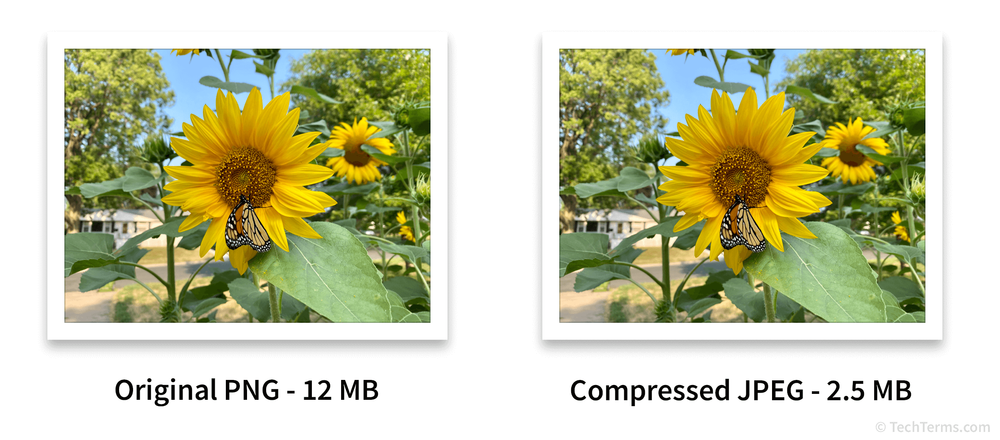

Image compression is the process of reducing the size of an image to save storage space or bandwidth. Almost every image compression algorithm takes advantage of the human eye's limited ability and an image's statistical properties to reduce the amount of data needed to represent an image. In real life, that looks like compressing a 1080p video to 720p or 480p to save bandwidth when streaming videos or compressing a library of images to save storage space on your phone.

This project aims to build a JPEG-esq lossy image compression codec. We wanted to learn about image compression through our own implementation of image compression techniques. We used techniques such as the Discrete Cosine Transform (DCT) and Singular Value Decomposition (SVD) to create an 16-bit (high dynamic range) image compression codec that is close to the performance of the JPEG codec.